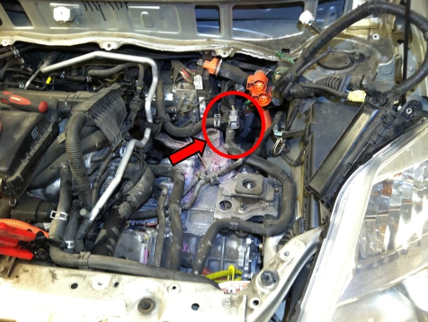

A typical car has a single water pump. It is driven by either the timing belt, timing chain, or an “accessory” drive belt (but a water pump is the opposite of an accessory– an engine will die within minutes without coolant flow). A water pump pumps coolant (which is typically a mixture of water and ethylene glycol) through the engine’s cylinder head and cylinder block and when the coolant is warm enough if flows through the radiator. (I often use the terms “water pump” and “coolant pump” interchangeably, but in the automotive community it is far more common to use “water pump.” It probably doesn’t qualify as ironic that in a naval nuclear reactor they are called coolant pumps and they pump basically pure water.)
Every Prius has at least a few water pumps. Prius I and Prius II have conventional water pumps like every car does; they are driven by an accessory drive belt. They both also have an electric water pump that pushes coolant through the heater core when the climate controls are set accordingly. It only turns on when the engine is stopped (and therefore the engine water pump is stopped) to make sure that your vent temperature stays warm. This heater water pump is located on top of the transmission and under the inverter assembly; you would never suspect anything to be there if you weren’t looking for it. Here’s a Prius II left side of the engine compartment with the inverter removed showing the heater water pump just behind/underneath a gray connector:

All Prii have a cooling system that is entirely separate from the engine cooling system. (In Prius II and III the engine and inverter radiators are built into a single structure that looks like one radiator, but the coolants do not mix.) We refer to this as the inverter cooling system, and it does indeed flow through the inverter assembly which contains power electronics for motor/generators 1 and 2 and the DC-DC converter which steps the high voltage of the hybrid vehicle battery down to auxiliary battery system voltage (13.8V or so). (Prius II and III include the air conditioning compressor inverter in the inverter assembly.) The inverter coolant system also flows through water jackets surrounding the stators of motor-generators 1 and 2 and a very small transmission oil cooler. The flow in this system is driven by the electric inverter water/coolant pump which is located in the engine compartment below and to the left of the left front corner of the inverter. It’s nestled down and to the right between the engine room relay/fuse/junction block and the left headlight.
(Prius II has one more electric water pump for the coolant heat storage system. This is the pump that you might sometimes hear running for the first 7 seconds when you ready-on before the engine starts or just after you turn the car off. Sometimes these pumps fail, too. This pump is located below the “thermos bottle” which is just in front of the left front wheel. It’s inaccessible without removing the engine under-shields.)
(Prius II engine cooling system is also complicated by another component that has a significant failure rate: the water flow control valve, aka 3-way valve. You can sometimes hear the failure of this component before it actually turns on the check engine light. (I’m not sure if it also turns on the master warning light, too…) It makes a repetitive noise as the motor tries repeatedly to position the valve. It’s located just inboard and below the inverter water pump. Here are some photos of one that I replaced and dissected, but I’m starting to go way off topic here…)
{kind=link}
{kind=link}
{kind=link}
{kind=link}
{kind=link}
(I’m not really familiar enough with Prius III to give an in depth explanation of it, but it is significantly different from previous generations in that it flows coolant around the catalytic converter for quick warm-up and also includes an exhaust gas recirculation (EGR) cooler.)
Anyway, we’re finally getting to the point of this post: Inverter water pumps fail sometimes. There’s a technical service bulletin (TSB) about it; it’s a known pattern failure, and the replacement pump is supposed to be less likely to fail. But the interesting thing about this failure is that there is such a small heat load on the inverter cooling system that during cool weather no failure is detected. All of the power electronics and motor/generators operate normally without any forced coolant flow, and temperature sensors never reach a threshold that sets a diagnostic trouble code (DTC). At least not until the weather gets hot. That’s the conclusion I’ve come to after replacing 3 inverter coolant pumps within 2 weeks during the hottest time of the year in Portland.
But how many temperature sensors are there and where are they located? (This is information that I can probably find with a little bit of research.) Without forced coolant flow might there be local hotspots that could cause damage to circuits or windings?
Fortunately, we can reduce the likelihood of any expensive damage by simply inspecting inverter coolant flow at every service. With the car ready-on (or even just key-on) you should be able to observe turbulent coolant flow in the inverter coolant bottle mounted on the right side of the inverter assembly. You can either shine a flashlight through the plastic or take the cap off and look down into the bottle to verify. There is no finesse to this observation: It either looks like a red or pink babbling (or at least swirling) brook or it is still and tranquil. I do this now for every Prius that comes in for any reason just like I would check oil level and engine coolant. I’m not sure if it will be an issue for Generation 3 Prii, but you can see the coolant is flowing by looking at either side of the internal partition in the inverter coolant reservoir. The first image shows the levels the same; the second show the coolant level slightly higher on the right (port) (inlet) side of the bottle than the left (starboard) (outlet) side.
{kind=link}
{kind=link}
The Prius III inverter coolant pump does not turn on with key-on, ready-off; it only turns on with ready-on (which I think makes more sense than Prius I and II).
By the way, when re-installing the inverter coolant caps, please make sure that they thread all the way on until they snap into their final orthogonal orientation. The little o-ring on the cap can bind up a bit and make the cap feel tight before it’s fully seated. I put a tiny dab of silicone grease on the o-ring, and the cap installs fully and smoothly.
The 3 Prii that came in for inverter water pump replacements probably had the pump fail sometime between September and May. If they had been in for service at any time after the pump had failed but before the code had set I could have made the observation, recommended the service, and prevented the worry, the cost of diagnosis, the unplanned interruption of transportation for our customers.
And just in case you are wondering if you can get away without doing this repair: absolutely not! For the coolant heat storage water pump you can forego the repair and probably have to endure the malfunction indicator light (MIL, aka check engine light) and not know if any simultaneous conditions might be causing the MIL to turn on. With the heater coolant pump: Sure I’ll do it for you, if you want, but I certainly wouldn’t recommend it for the inconvenience of having the vent temperatures drop slightly while you’re at a stop light on a cold day. The engine coolant pump can have a few different symptoms, and I’ll leave that for another blog post. But the inverter coolant pump is as straightforward as it gets. It could leave you broke down and stranded, and it could potentially cause damage requiring much more expensive repairs. I’ll be sorry to give you the news, but at least there will be no decision fatigue: You have to make this repair.